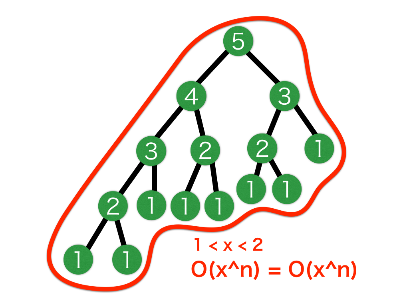
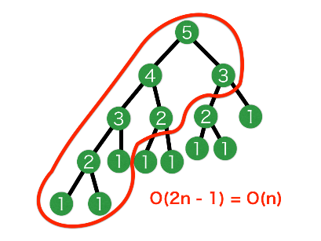
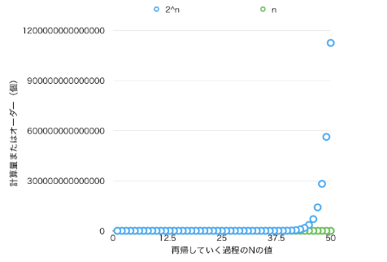

連想表をリフレクションに作りながらフィボナッチ数を計算する場合とそうでない場合を比較し、アルゴリズムおよび計算量を明示する絵図を下記、JPERGまたはPNGに変換した上で、レポートメールに添付してください。
連想表を使わず、フィボナッチ数を計算する場合
{kind=link}
連想表を使わない場合、上図のようなノードに対してフィボナッチ数の計算を行う。また、上図では入力としてfibonaccis(5)を与えた時の例を示しており、深さ優先２分木探索（完全２分木ならO(2n)）をしている。この場合の計算量を考えると、決して正しいオーダーの計算手法ではないが、任意のあるノードは１つまたは２つの子ノードを持つため、1<x<2であり、nをルートの値（引数）としたとき、計算量はO(xn)（O(1n) < O(xn) < O(2n)）つまり、計算量yはy=xn乗に増えるため、指数関数上に計算量が増加すると予測できる。
連想表をリフレクションに作りながらフィボナッチ数を計算する場合
{kind=link}
連想表を使う場合、上図のようなノードに対してフィボナッチ数の計算を行う。そして、連想表をリフレクションに作りながら、処理を行うことによって、一度連想表に書き込まれた数値を持つノードの処理を飛ばすことができ、枝切りできる。このとき、上図の赤丸で囲ったノードだけを通り処理を行うので、計算量はO(2n-1)=O(n)となる。つまり、計算量yはy=nずつに増えため、直線関数上に計算量が増加すると予測できる。
連想表を使う場合と使わない場合のフィボナッチ数を求める計算量
{kind=link}
上のグラフは、表計算ソフトNumbersを使って、連想表を使う場合と使わない場合のフィボナッチ数を求める処理の計算量を表計算した散布図である（使い慣れていないので汚いです）。x座標がルートの値（引数）、y座標が計算量、水色の点が連想表を使わない場合でy=2nとし、黄緑色の点が連想表を使う場合でy=nとなっている。今日の実習で引数が25だと、指数関数上に加速することが見受けられ、引数が50だと処理が計算に時間がかかりすぎて強制終了したので、このグラフはある程度正しいということがわかる。
その他、感想
オーダー
プログラミングコンテストくらいしか実践してませんが、ある一定時間内に処理を終わらせる場合、オーダーを考えて、計算量を見積もる必要がありますが、今回のレポートをやって感じたのは、"視覚的に"オーダーを比較することによって、"どういう値のときにどの程度の計算量"というのが、わかりやすかったです。それのおかげで引数が50のときJunが止まった理由だったり、引数が25のとき指数関数上に加速したりという理由がわかったので、オーダーを考える上での視覚化の重要性に気づきました。
動かないプログラム
今使っているPCのスペックで動かないようなプログラムが未来では作られているというのが、今日の授業で響きました。ずっと今まで複数のコンピュータがないと動作しないだとか、今のコンピュータでは計算できないようなプログラムは僕自身は一切作っていません。でも、Googleなら世界中の莫大データを処理しようとしていますし、Appleなら今まで平面とストリートビューだけだった地図を3D化させようとしています。そう考えると、今までのスペックで動かないようなプログラムを作るのは、これからの未来にすごく必要とされているものだと思います。
C++
Paladinプロジェクトにおいて、オブジェクト指向の方が自分の中では理解しやすいと考えたのと、実行速度的にC++で記述しています。しかし、プログラミング言語は、いくつか見た中でもすべてにおいて、C言語で作られていました。そしてC++を補う形でC#が作られたということは、青木さんのいうようにC++には何か問題があるような気がしました。オブジェクト指向はC言語のstructで表せるので、それは違うとして、他に導入された部分でよろしくない部分があるのかもしれないので、もうちょっと調べようと思います。